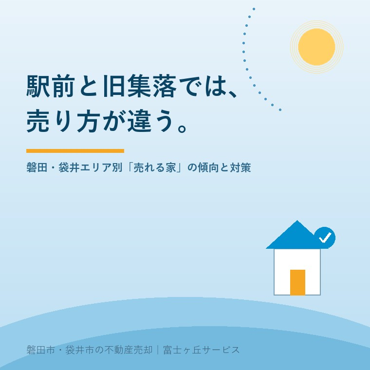

2026年8月1日｜カテゴリ：地域相場・売却戦略

この記事の要点
Q. うちの実家は駅から遠い昔ながらの集落。こんな場所でも売れるの？
A. 売れます。ただし、駅徒歩圏・郊外住宅地・旧集落では買主層がまるで違うため、同じ売り方では結果が出ません。エリアごとの「誰が買うか」から逆算して、価格・見せ方・待ち方を変えることが大切です。磐田市・袋井市・森町では、介護施設の運営から不動産事業を始めた富士ヶ丘サービスのような地域密着の会社に、エリアの実情を踏まえた売り方を相談するという選択肢があります。
「磐田の相場はいくらですか？」とよく聞かれますが、実はこの質問には答えづらいのです。同じ磐田市内でも、磐田駅徒歩圏と旧集落の農家住宅では、買主も、価格の付き方も、売れるまでの時間も、まったく別の市場だからです。今日は、当社が日々の相談で感じている磐田・袋井の「3つのエリア」の違いを、売る側の対策とセットでまとめます。ご自身の実家がどのエリアに当たるか、当てはめながら読んでみてください。
磐田駅・袋井駅・御厨駅などの徒歩圏は、通勤・通学の利便性を最優先する共働き世帯や、車の運転を手放したいシニアの住み替え需要が重なる、この地域でいちばん厚い市場です。特徴的なのは、建物が古くても「土地」として値段が付きやすいこと。ハウスメーカーや建売業者の仕入れ需要もあるため、古家付きのままでも買い手候補が複数現れることが珍しくありません。
売る側の対策：焦って解体しないこと（解体の記事のとおり、更地化は税負担が先行します）。個人の住み替え客と業者、両方に声が届く売り方をすれば、条件を比べて選べる立場になれます。相対的に短期決戦がしやすいエリアです。
区画整理された住宅団地や、スーパー・学校・幹線道路へのアクセスがよい郊外住宅地。ここの主役は、車2台を前提にした地元の子育て世帯です。新築価格の上昇を受けて「中古を買って直して住む」層が着実に増えており、磐田市の既存住宅取得等の補助金（転入なら最大150万円）がこの動きを後押ししています。
売る側の対策：このエリアの買主は「住むイメージ」で選びます。残置物ゼロ・草刈り・水回りの清掃といった基本の整えが、価格にも期間にも直結します。買主が補助金を使えるかどうかも決め手になるため、建築年や耐震の資料をそろえておくと有利です（補助金の記事参照）。内覧対応が勝負のエリア、と覚えてください。
敷地100坪超、母屋に離れ・蔵・農地つき──磐田・袋井らしい旧集落の実家です。正直に言えば、買主層はいちばん薄く、時間もかかります。ただ、ゼロではありません。「広い庭で家庭菜園をしたい」「平屋でゆったり暮らしたい」「親の近くに戻りたい」という地縁のある買主や移住志向の層に、「広さと暮らし方」が刺されば動きます。
売る側の対策：①価格は「単価×面積」の計算値ではなく、買える人の予算から逆算する（4つの値段の記事参照）、②農地・山林は宅地と分けて出口を考える（田畑山林の記事参照）、③広すぎる敷地は分筆して売る選択肢もある（本日公開の分筆売却の記事へ）、④長期戦を前提に、管理と保険を整えて待てる体制を作る。この4点です。
| 調べたいこと | 方法 |
|---|---|
| 近隣の実際の成約価格 | 国土交通省「不動産情報ライブラリ」。地図から磐田市・袋井市の取引価格・成約情報を無料で確認できる |
| 売り出し中のライバル物件 | ポータルサイトで同エリアの売出し物件を見る。「いくらで出ていて、どれくらい残っているか」は貴重な相場情報 |
| エリアの地価水準 | 公示地価・路線価（4つの値段の記事で解説した無料ツール） |
ただし、データで分かるのは「エリアの傾向」まで。最後は、道路付け・敷地の形・建物の状態といった個別の事情で決まります。傾向（エリア）×個別（その家）の掛け算で戦略を立てるのが、査定と売却の実務です。
富士ヶ丘サービスは、磐田市・袋井市に特化してきたからこそ、エリアごとの買主の顔が見えています。「うちの実家はどの市場で、誰に、どう売るべきか」──その見立てから、ふじがおか実家カルテでご一緒します。
ふじがおか実家カルテ｜「どの市場で売るか」の見立てに
エリアの傾向×その家の個別事情。戦略を、まず1冊に。
登記情報と固定資産税通知書から立地・道路・農地・建物を確認し、エリアの実情を踏まえた売り方の方向性を整理してお渡しします。
本記事は2026年8月1日時点の情報と、当社の営業経験に基づく相場観をまとめたものです。エリアの傾向は一般論であり、個別の物件の売れ行き・価格を保証するものではありません。具体的な価格は査定でご確認ください。

この記事を書いた人：大石浩之（宅地建物取引士）
磐田市・袋井市・森町で「介護×相続×空き家」に特化した不動産売却支援を行う富士ヶ丘サービスの代表取締役・宅地建物取引士。介護施設の運営から不動産事業を始めた経験をもとに、売主とご家族が困らない売却を一件ずつお手伝いしています。プロフィール
磐田市・袋井市・森町の実家じまい・相続空き家相談
固定資産税通知書だけでも相談できます
住所があいまいでも、通知書や写真から名義・道路・農地・残置物の確認順を整理します。カルテ申込またはLINEで状況を送ってください。
富士ヶ丘サービス株式会社／静岡県磐田市見付5789番地1／TEL:0538-31-3308／静岡県知事 (2) 第14083号／代表取締役・宅地建物取引士 大石 浩之